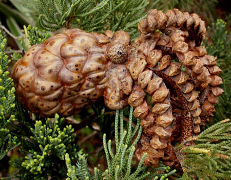

Tree octopus species, including the endangered Pacific
Northwest Tree Octopus, are some of the most elusive creatures
known to Man. Not many researchers have managed to photograph
them in the wild and those few in captivity tend to hide in
inaccessable corners of their cages, as if purposefully
avoiding the prying of humans.
Any Tree Octopus sighting should be sent to lyle@zapatopi.net. If it adds significantly to
Tree Octopus research it may end up on this page.
2011-01-06: A rare sighting of tree octopus predation by
hawk:
Hello!
A few days ago I stumbled across some information about the
Pacific
Northwest Tree Octopus on the web, so I decided to look for
a specimen
in my area. I was happy to discover a tree octopus living
comfortably
in a tree near my house. I excitedly took out a dollar bill
for its
nest, and left it at the base of the tree trunk. I dashed
inside to
get my camera, and took this picture just before the
magnificent
little creature crawled into its nest. I've seen this tree
octopus
and maybe a couple others a few times since. I really hope
this photo
adds to your research.
Sincerely,
John C. Lawson
A report of tragedy among the already endangered tree
octopus population:
2010-03-24: "Tree Octopi tragedy"
While enjoying a break from shooting one of my films, I
was vacationing on the west coast, visiting a friend.
Inbetween our extensive debates on international politics
and the environment, we happen to stroll the grounds of his
estate. His home is set adjacent to the beautifully scenic
Olympic National Park. The air was tinged with smoke from
the nearby Constantine fire, which was happening at the
time. It wasn't long before I noticed something strange at
my feet, an entire pod of 30 to 40 Pacific Northwest tree
octopi were littering his lawn. The poor creatures had
obviously been driven from the moisture of their forest
homes and were desperately migrating toward the safety of
the nearby Hood Canal. Tearfully, we collected several of
the dehydrated animals and tried to nurture them back to
health, but to no avail. I have attached [photos] of one of
the Octopi for you to use to raise awareness to the
continued plight of the species.
With love & support to the Pacific Northwest tree
octopus
Babette Bombshell

With their numbers still dwindling, this is the sort of
setback that the Pacific Northwest Tree Octopus can ill
afford.
{kind=link}
{kind=link}